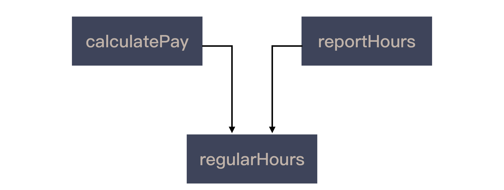

34 | 你的代码是怎么变混乱的？
前面几讲，我给你讲了开发过程的各种自动化，从构建、验证到上线部署，这些内容都是站在软件外部看的。从这一讲开始，我准备带领大家进入到软件内部。今天的话题就从写代码开始说起。
逐步腐化的代码
代码是程序员改造世界最直接的武器，却也是程序员抱怨最多的东西。为什么程序员会对代码如此不满呢？
你会抱怨写一段代码吗？你肯定不会，毕竟这是你养家糊口的本领，最基本的职业素养我们还是有的。那抱怨的是什么呢？是维护一段代码。
为什么维护代码那么难？因为通常来说，你维护的这段代码是有一定年龄的，所以，你总会抱怨前人没有好好写这段代码。
好，现在你拿到了一个新的需求，要在这段代码上添加一个新功能，你会怎么做呢？很多人的做法是，在原有的代码上添加一段新的逻辑，然后提交完工。
发现问题了吗？你只是低着头完成了一项任务，而代码却变得更糟糕了。如果我问你，你为什么这么做？你的答案可能是：“这段代码都这样了，我不敢乱改。”或者是：“之前就是这么写的，我只是遵循别人的风格在写。”
行业里有一个段子，对程序员最好的惩罚是让他维护自己三个月前写的代码。你一不小心就成了自己最讨厌的人。
从前，我也认为很多程序员是不负责任，一开始就没有把代码写好，后来，我才知道很多代码其实只是每次加一点。你要知道，一个产品一旦有了生命力，它就会长期存在下去，代码也就随着时间逐渐腐烂了。
而几乎每个程序员的理由都是一样的，他们也很委屈，因为他们只改了一点点。
这样的问题有解吗？一个解决方案自然就是我们前面说过的重构，但重构的前提是，你得知道代码驶向何方。对于这个问题，更好的答案是，你需要了解一些软件设计的知识。
SOLID 原则
提到软件设计，大部分程序员都知道一个说法“高内聚、低耦合”，但这个说法如同“期待世界和平”一样，虽然没错，但并不能很好地指导我们的具体工作。
人们尝试着用各种方法拆解这个高远的目标，而比较能落地的一种做法就是 Robert Martin 提出的面向对象设计原则：SOLID，这其实是五个设计原则的缩写，分别是
- 单一职责原则（Single responsibility principle，SRP）
- 开放封闭原则（Open–closed principle，OCP）
- Liskov 替换原则（Liskov substitution principle，LSP）
- 接口隔离原则（Interface segregation principle，ISP）
- 依赖倒置原则（Dependency inversion principle，DIP）
早在1995年，Robert Martin 就提出了这些设计原则的雏形，然后在他的《敏捷软件开发：原则、实践与模式》这本书中，比较完整地阐述了这五个原则。后来，他有把这些原则进一步整理，成了今天的 “SOLID”。
学习这些设计原则有什么用呢？
今天的程序员学习软件设计多半是从设计模式入门的，但不知道你是否有这样的感觉，在学习设计模式的时候，有几个设计模式看上去如此相像，如果不是精心比较，你很难记得住它们之间的细微差别。
而且，真正到了工作中，你还能想得起来的可能就剩下几个最简单的模式了，比如工厂方法、观察者等等。
另外，有人常常“为赋新词强说愁”，硬去使用设计模式，反而会让代码变得更加复杂了。你会有一种错觉，我是不是学了一个假的设计模式，人人都说好的东西，我怎么就感受不到呢？
初学设计模式时，我真的就被这个问题困扰了好久。直到我看到了 Robert Martin 的《敏捷软件开发：原则、实践与模式》。这是一本被名字糟蹋了的好书。
这本书出版之际，敏捷软件开发运动正风起云涌，Robert Martin 也不能免俗地蹭了热点，将“敏捷”挂到了书名里。其实，这是一本讲软件设计的书。
当我看到了 SOLID 的五个原则之后，我终于想明白了，原来我追求的方向错了。如果说设计模式是“术”，设计原则才是“道”。设计模式并不能帮你建立起知识体系，而设计原则可以。
当我不能理解“道”的时候，“术”只能死记硬背，效果必然是不佳的。想通这些之后，我大大方方地放弃了对于设计模式的追求，只是按照设计原则来写代码，结果是，我反而是时常能重构出符合某个设计模式的代码。至于具体模式的名字，如果不是有意识地去找，我已经记不住了。
当然，我并不是说设计模式不重要，之所以我能够用设计原则来写代码，前提条件是，我曾经在设计模式上下过很多功夫。
道和术，是每个程序员都要有的功夫，在“术”上下过功夫，才会知道“道”的价值，“道”可以帮你建立更完整的知识体系，不必在“术”的低层次上不断徘徊。
单一职责原则
好，下面我就单拿 SOLID 中单一职责原则稍微展开讲一下，虽然这个原则听上去是最简单的，但也有很多误解存在。
首先，什么是单一职责原则呢？如果读过《敏捷软件开发：原则、实践与模式》，你对单一职责的理解应该是，一个模块应该仅有一个修改的原因。
2017年，Robert Martin 出版了《架构整洁之道》（Clean Architecture），他把单一职责原则的定义修改成“一个模块应该仅对一类 actor 负责”，这里的 actor 可以理解为对系统有共同需求的人。
不管是哪个定义，初读起来，都不是那么好理解。我举个例子，你就知道了。我这里就用 Robert Martin 自己给出的例子：在一个工资管理系统中，有个 Employee 类，它里面有三个方法：
- calculatePay()，计算工资，这是财务部门关心的。
- reportHours()，统计工作时长，这是人力部门关心的。
- save()，保存数据，这是技术部门关心的。
之所以三个方法在一个类里面，因为它们的某些行为是类似的，比如计算工资和统计工作时长都需要计算正常工作时间，为了避免重复，团队引入了新的方法：regularHours()。

接下来，财务部门要修改正常工作时间的统计方法，但人力部门不需要修改。负责修改的程序员只看到了 calculatePay() 调用了 regularHours()，他完成了他的工作，财务部门验收通过。但上线运行之后，人力部门产生了错误的报表。
这是一个真实的案例，最终因为这个错误，给公司造成了数百万的损失。
如果你问程序员，为什么要把 calculatePay() 和 reportHours()放在一个类里，程序员会告诉你，因为它们都用到了 Employee 这个类的数据。
但是，它们是在为不同的 actor 服务，所以，任何一个 actor 有了新的需求，这个类都需要改，它也就很容易就成为修改的重灾区。
更关键的是，很快它就会复杂到没人知道一共有哪些模块与它相关，改起来会影响到谁，程序员也就越发不愿意维护这段代码了。
我在专栏“开篇词”里提到过，人的大脑容量有限，太复杂的东西理解不了。所以，我们唯一能做的就是把复杂的事情变简单。
我在“任务分解”模块中不断强调把事情拆小，同样的道理在写代码中也适用。单一职责原则就是给了你一个指导原则，可以按照不同的 actor 分解代码。
上面这个问题，Robert Martin 给了一个解决方案，就是按照不同的 actor 将类分解，我把分解的结果的类图附在了下面：

编写短函数
好，你已经初步了解了单一职责原则，但还有一点值得注意。我先来问个问题，你觉得一个函数多长是合适的？
曾经有人自豪地向我炫耀，他对代码要求很高，超过50行的函数绝对要处理掉。
我在专栏中一直强调“小”的价值，能看到多小，就可以在多细的粒度上工作。单一职责这件事举个例子很容易，但在真实的工作场景中，你能看到一个模块在为多少 actor 服务，就完全取决于你的分解能力了。
回到前面的问题上，就我自己的习惯而言，通常的函数都在十行以内，如果是表达能力很强的语言，比如 Ruby，函数会更短。
所以，你可想而知我听到“把50行代码归为小函数”时的心情。我知道，“函数长短”又是一个非常容易引起争论的话题，不同的人对于这个问题的答案，取决于他看问题的粒度。
所以，不讨论前提条件，只谈论函数的长短，其实是没有意义的。
单一职责原则可以用在不同的层面，写一个类，你可以问问这些方法是不是为一类 actor 服务；写方法时，你可以问问这些代码是不是在一个层面上；甚至一个服务，也需要从业务上考虑一下，它在提供是否一类的服务。总之，你看到的粒度越细，也就越能发现问题。
总结时刻
今天，我讲的内容是软件设计，很多代码的问题就是因为对设计思考得不足导致的。
许多程序员学习设计是从设计模式起步的，但这种学法往往会因为缺乏结构，很难有效掌握。设计原则，是一个更好的体系，掌握设计原则之后，才能更好地理解设计模式这些招式。Robert Martin 总结出的“SOLID”是一套相对完整易学的设计原则。
我以“SOLID” 中的单一职责原则为例，给你稍做展开，更多的内容可以去看 Robert Martin 的书。不过，我也给你补充了一些维度，尤其是从“小”的角度告诉你，你能看到多小，就能发现代码里多少的问题。
如果今天的内容你只能记住一件事，那请记住：把函数写短。
最后我想请你思考一下，你是怎么理解软件设计的呢？欢迎在留言区写下你的想法。
感谢阅读，如果你觉得这篇文章对你有帮助的话，也欢迎把它分享给你的朋友。